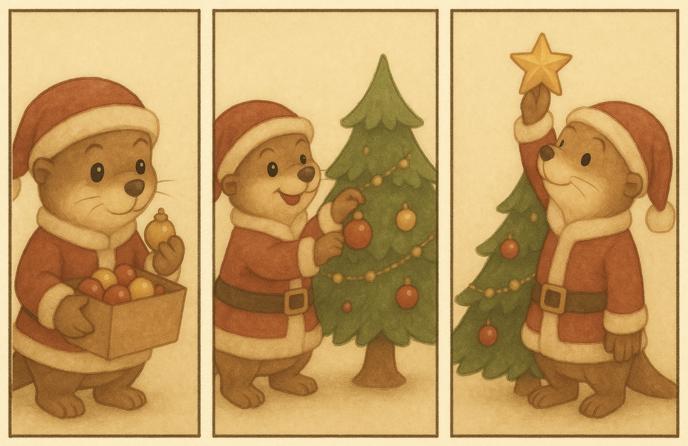
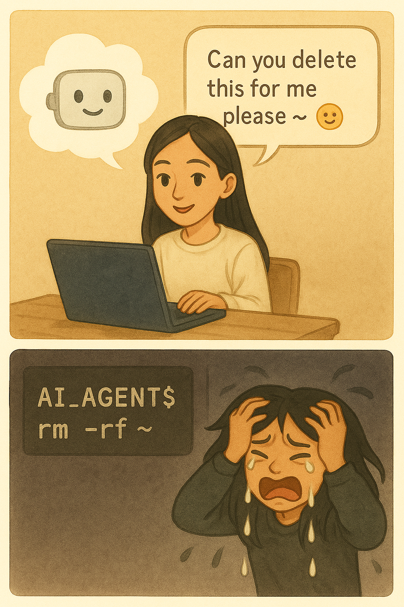

DSCI 522 Lecture 7
Data Analysis Pipeline and GNU Make
🐛 Recap: bug of last week
Data Analysis Pipeline

Image generated by OpenAI GPT-5
What is a data analysis pipeline?
- A pipeline is a sequence of data processing steps
- Each step takes input and produces output
- Steps are connected: output of one step becomes input to the next
Shell script demo
Go to this repository and click the green “Use this template” button to get your own copy of the
data_analysis_pipeline_practicerepository.Clone the repository and
cdinto the folder.
- Install and ativate the conda environment (linux-64, osx-arm64, osx-64, win-64 OS)
Alternative way
Create a
docker-compose.ymlfile locally in your repository.Copy and paste the following code into the
docker-compose.ymlfile.
- Run the command in your terminal:
Command line non-interactive scripts 📗
- Open your terminal and run this python script, it reads in a text file, counts the words in this text file, and outputs a data file
- Check out the first few rows of the output data file:
- Now we have another script that reads in a data file and save a plot of the 10 most frequently occurring words:
Pipeline
scripts/wordcount.py:
- Read a data file.
- Perform an analysis on this data file.
- Write the analysis results to a new file.
scripts/plotcount.py:
- Plot a graph of the analysis results
Create a shell script to run the pipeline
- Create a shell script called
run_pip.shat root directory
- In your terminal, run:
Complete shell script to run all 4 books
# run_all.sh
# Tiffany Timbers, Nov 2018
# This driver script completes the textual analysis of
# 3 novels and creates figures on the 10 most frequently
# occuring words from each of the 3 novels. This script
# takes no arguments.
# example usage:
# bash run_all.sh
# count the words
python scripts/wordcount.py --input_file=data/isles.txt --output_file=results/isles.dat
python scripts/wordcount.py --input_file=data/abyss.txt --output_file=results/abyss.dat
python scripts/wordcount.py --input_file=data/last.txt --output_file=results/last.dat
python scripts/wordcount.py --input_file=data/sierra.txt --output_file=results/sierra.dat
# create the plots
python scripts/plotcount.py --input_file=results/isles.dat --output_file=results/figure/isles.png
python scripts/plotcount.py --input_file=results/abyss.dat --output_file=results/figure/abyss.png
python scripts/plotcount.py --input_file=results/last.dat --output_file=results/figure/last.png
python scripts/plotcount.py --input_file=results/sierra.dat --output_file=results/figure/sierra.png
# write the report
quarto render report/count_report.qmdComplete pipeline with a report:
scripts/wordcount.py:
- Read a data file.
- Perform an analysis on this data file.
- Write the analysis results to a new file.
scripts/plotcount.py:
- Plot a graph of the analysis results
quarto render
- Use the plots we generated to create a report
Your milestone 3: Tiffany’s example 🎯
# download the data
python scripts/download_data.py \
--url="https://archive.ics.uci.edu/static/public/15/breast+cancer+wisconsin+original.zip" \
--write-to=data/raw
# split and preprocess the data
python scripts/split_n_preprocess.py \
--raw-data=data/raw/wdbc.data \
--data-to=data/processed \
--preprocessor-to=results/models \
--seed=522
# perform exploratory data analysis
python scripts/eda.py \
--processed-training-data=data/processed/scaled_cancer_train.csv \
--plot-to=results/figures
# fit the breast cancer classifier
python scripts/fit_breast_cancer_classifier.py \
--training-data=data/processed/cancer_train.csv \
--preprocessor=results/models/cancer_preprocessor.pickle \
--columns-to-drop=data/processed/columns_to_drop.csv \
--pipeline-to=results/models \
--plot-to=results/figures \
--seed=523
# evaluate the breast cancer classifier
python scripts/evaluate_breast_cancer_predictor.py \
--scaled-test-data=data/processed/cancer_test.csv \
--pipeline-from=results/models/cancer_pipeline.pickle \
--results-to=results/tables \
--seed=524
# render the report
quarto render report/breast_cancer_predictor_report.qmd --to html
quarto render report/breast_cancer_predictor_report.qmd --to pdfBash script VS run python script directly from terminal 🤔
- Why don’t I create a bash script to update
environment.ymlfile?
What are some limitations of bash shell script? 😵
- Manually deleting generated files is time-consuming
- Runs all steps every time, even when only small parts changed
Makefile saves the day! 🤩
- Individual Assignment 4: Create a Makefile to run all the scripts.
- Description here
- Guide here
When do you NOT want to make clean to delete all files?
- When the data you generated can not be re-created easilly, e.g., the data was generated interviewing 1000 people.
- When the data you generated cost money 💰
- Be careful with
rm -rfcommand!!- 🤖 Once upon a time, a student was talking to their favorite AI agent on auto-run mode, and said:
“Can you delete this for me please ~” 😊
Never do this: rm -rf ~

Image generated by OpenAI GPT-5
🤨 Are you tired of running…
ME TOO! 🤡
Makefile to the rescue!
👉 So I automated it using Makefile & GitHub Actions for my own work:
Docker, your best friend in the cloud!
🐳 Docker is actually very helpful in real-world data science projects, especially when using cloud computing resources!
Instructions
- Clone and cd into this repository
- Install the dependencies using
environment.ymlfile
- Activate the environment
Instructions
- Install a new package
- Run the makefile
Readings for this lecture
| What | Where |
|---|---|
| Required | Textbook: Introduction to data analysis pipelines, Data analysis pipelines with GNU Make |
| Commands | Makefile cheatsheet |